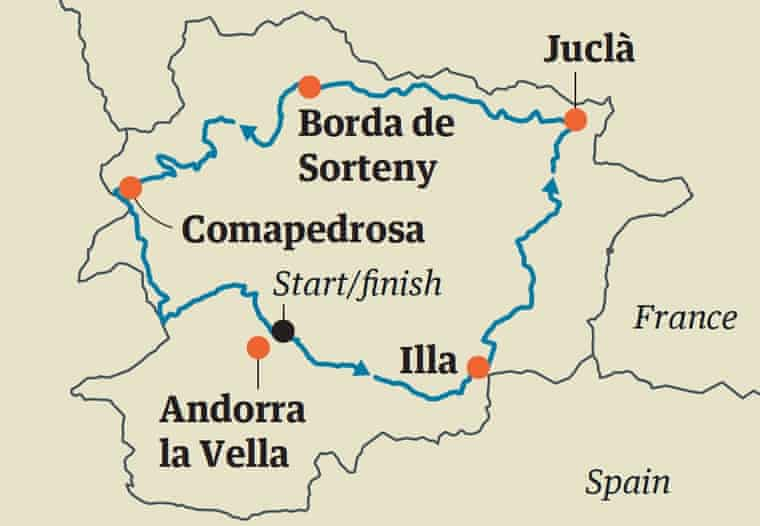
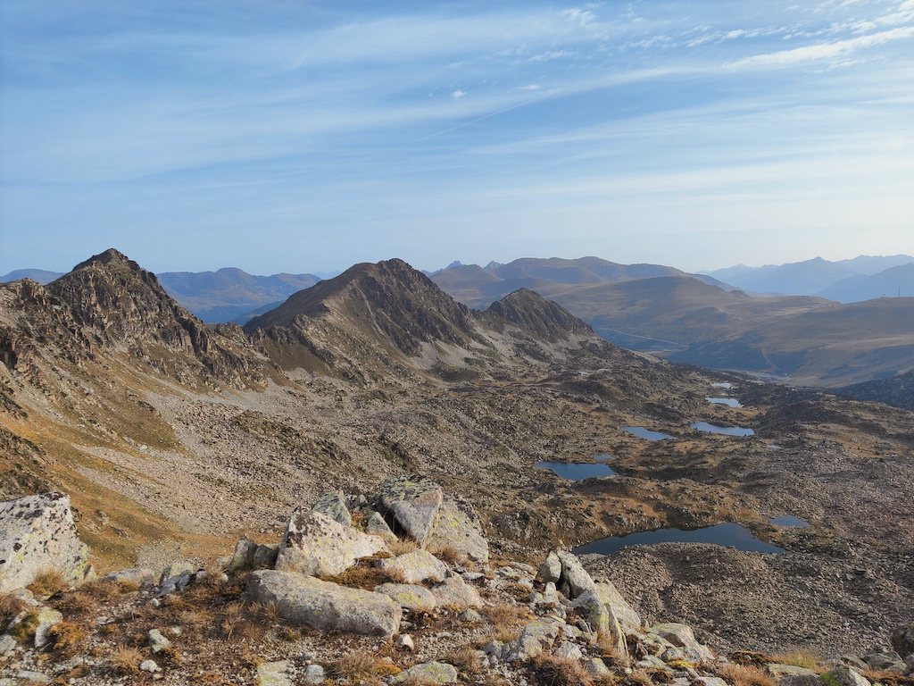
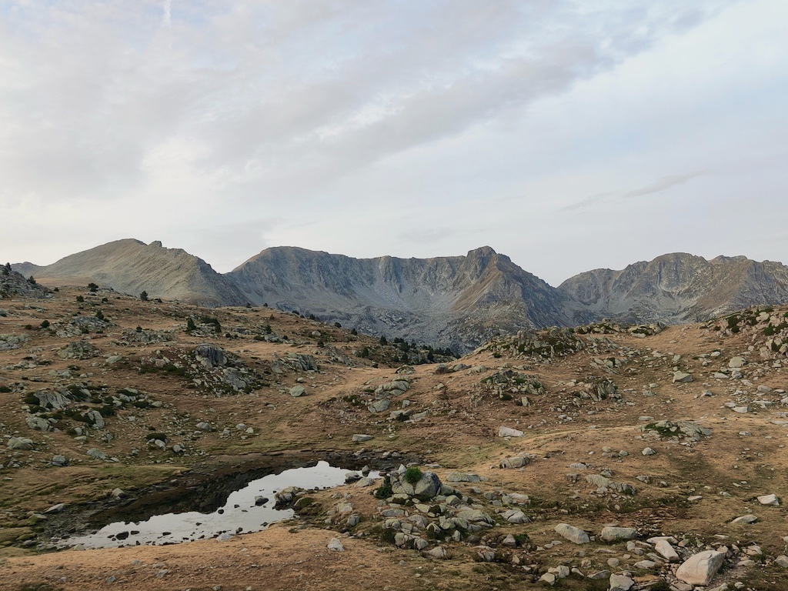
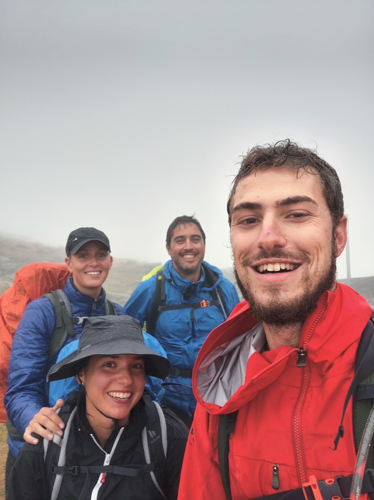

Hiking around Andorra in 5 days
October 17th, 2021
For photos of this trip, check out this photo gallery.
About a month ago I ticked off the top item on my "European Countries I'd Still Like To Visit" list: Andorra.
The little mountainous country squeezed between Spain and France was staring at me every time I opened a map of Europe, so when a work trip took me back to the Iberian Peninsula, I wasn't going to waste the opportunity.
Having wrapped up the work week in Portugal, I packed my bags and set off for Andorra, with the goal of walking around it in 5 days.
Here's how that went.
The Trail
While reading up on Andorra online, I stumbled upon a trail called Coronallacs.
Coronallacs is a new trail (2017) that goes around the 4 existing staffed shelters in Andorra. These are aptly placed in the "corners" of the country, meaning if you visit all of them, starting and finishing around Andorra la Vella, you essentially complete a loop around Andorra (somewhat).

Most - if not all - of trails connecting the shelters are not new. A variety of routes pass by them, most notably some GRs, the HRP (a crossing of the Pyrenees from the Atlantic to the Mediterranean), and the GRP (a longer loop around Andorra).
However, the particular combination of paths that make up the Coronallacs has only been listed as its own trail for fewer than 5 years, and, from the information provided to me by the tourist office, the number of people who have completed the trail is still in the three digits.
The trail is listed at a length of 92km, a number that isn't particularly impressive for a 5-day journey.
However, the key number for the trail is 6,868. 6,868m is the total altitude gain and loss over the trail, which people online will point out is the equivalent (only on paper :D) of ascending (and descending) Aconcagua from sea level.
Planning
Compared to a lot of other trails, there's a good amount of information about the Coronallacs online.
That is, an official website for the trail exists (coronallacs.com), providing a good idea of what to expect, but beyond that it's hard to really be certain of the details. That's partly why I wanted to write this article.
I planned to do the entire trail alone, so I wanted to get a better sense of what was ahead of me than the information I could find online.
I spent some time at the tourism office going over some of my questions, but as I'd later find out, you need to take any information gathered there with a pinch of salt.
Given I was setting out to walk alone in the Pyrenees for 5 days, I wanted to make sure I kept some people updated about my whereabouts. I bought an Andorran SIM card, and asked the guy at the tourist office if I'd find cell reception at all the shelters. I would have been fine with a "no", but he confidently asserted that this was indeed the case, no problem.
This led me to promise my family I'd send a checkpoint every evening, which turned out to be a minor hassle.
Two people also told me they were informed the trail would not pass by any villages, going entirely through the mountains. This is blatantly incorrect, but a quick glance at a map would debunk this. Basic rule: always look at a map of your route before setting off.
Speaking of maps, my best friend throughout the trip was a 1:50000 map of Andorra I bought from the tourist office. I spent quite a bit of time familiarizing myself with the trail on the days leading up to it, as well as constantly referred to it on a daily basis.
This proved very valuable, since I was able to make decisions like carrying less water with me on specific days, as well as was able to help a man safely exit the trail, given he was unaware of any "exit routes".
I had a few days in Andorra before starting the trail, and mostly used those to handle the logistics of the trip.
Here go a few tips if you're interested.
Storage
I came to Andorra from a work trip, so I had a bunch of things with me that I certainly wasn't going to take up to the mountains.
The bus station has some lockers, but I opted for using GuardaTot. There are a few locations in Escaldes and Andorra la Vella, making it pretty convenient to access.
It was slightly annoying to set this up, given they are geared towards longer-term storage, so I had a lot of back-and-forth with their agents on WhatsApp. They did generally answer pretty quickly though.
I had to put up a 50 euro deposit, but ultimately my total bill for a week came out to 6 euros, and I felt very safe leaving my stuff in their storage area.
Just note that if you don't have an Andorran bank account, they can only refund you the deposit in cash. This is generally done at one specific office, but they were nice enough to actually leave an envelope with the cash inside my storage box so I didn't have to go all the way to the office.
Mobile data
Very few international companies include Andorra in their roaming-exempt list. As a result, I saw people hit with massive bills for just a few minutes using their data plan from other European countries just to call someone.
After a bit of research, I decided to just buy a local SIM. This set me back 19 euros but was completely worth it.
I managed to use it on the trail, and it was of course very useful in the city. I was also made quite a lot of calls to places like the GuardaTot office (see the "Storage" section), the hotel, the tourist office, and pharmacies (to book a COVID test), so this was no-brainer to me.
Andorra only has one telecom provider, and that's Andorra Telecom. You should go to one of their stores to get a SIM card - unlike some other countries, convenience stores won't sell pre-paid SIMs.
Day 1
Listed specs
- Length: 12.6km
- Altitude difference: 1.473/-40m
- Duration: 6h38
- Difficulty: Medium
From my perspective, Day 1 was "a walk in the park", quite literally.
During this walk through the Vall del Madriu-Perafita-Claror national park, the weather was great (not too cold, not too warm), the path was well-marked, and the views were spectacular.
I found myself going at a very fast pace early on and kept telling myself to slow down and save my knees for the days to come. With the weather as it was, there wasn't a lot of rush to arrive.
Despite really forcing myself to go slower, I completed this stage in around 5h, much faster than the listed duration of almost 7h. This was not an indication of how things would go in the following days, however.
Note: Do not let this fool you! Stage 1 is still a 1,500m ascent with a 5-day backpack. You should never take trails like these lightly.
I set off on this trip by myself, and didn't bump into anyone going up during this stage. I only crossed paths with a few people who were coming down from having spent the night at the I'lla shelter.
It was a mostly lonely walk, with the exception of some cows and horses. The absolute highlight was a valley I reached after walking for around 3h. The sun was shining, some horses were hanging around, and the river provided a nice opportunity to freshen up.

The first night is spent at Refugi de l'Illa, a reasonably modern shelter at located at an altitude of 2,488m. The refuge sits just under a dam, and I highly recommend going up to the lake for a dip.
It's worth noting that there's no internet access here - not for you at least. I had no cell reception via Andorra Telecom SIM card, and there was no Wi-Fi available.
The only reason this mattered for me was that, as I mentioned earlier, having been told I'd have cell reception at every shelter, I promised my family to "check-in" every evening.
However, the people working at the shelter did have an internet connection, so they offered to send an email on my behalf.
Dinner here was simple but tasty and with large portions. Wine was also served with the meal.
As for the rest of the facilities, you can take a warm shower here, but you need to buy tokens that are worth for a minute each. Bunks have a mat, but no blankets or pillows were provided. Apparently shelters do offer these, but stopped doing so during the pandemic.
Blankets or not, you should probably always carry a sleeping bag with you, which would allow you to do an emergency bivouac if necessary.
The shelter was quite empty, and the seven of us had dinner together. A German and a Spaniard were doing a 30+ day trail, whereas the others (2 Brazilians, 2 Basques) were also doing the Coronallacs. One Brazilian had already decided to quit, and the rest of us decided to start the next stage together.
Day 2
Listed specs
- Length: 19.4km
- Altitude difference: 1,350/-1,527m
- Duration: 10h35
- Difficulty: Medium-high
The Brazilian who had "quit" woke up feeling fresh and decided to set off with us.
Thus, after having a good breakfast, the five of us set off for stage 2 at around 8am.
The day started with around 350m of ascent in pretty rugged terrain. We soon reached the highest point of the trail, at a bit over 2,800m.
From here we could see the lakes we'd be walking past for the coming hours.

The turn to go down the mountain was an easy-to-miss one, and the descent was both steep and slippery, setting the tone for the rest of the day.
We walked around the lakes until we reached a little restaurant. This is one of two opportunities during the second day to buy food (and potentially water). We didn't stop here though.
We continued on through a ski station and then descended quite a bit to reach a little ski town.
They had a market where we bought some food and we had a lunch break sitting out on the street.
Here, with a tough ascent lurking, the Brazilian who had quit the day before quit once and for all, taking a bus back to Andorra la Vella. We were now four people.
Note: This is the best "exit route" until Day 4. The ski town is around the halfway mark of Stage 2, but, in reality, you still have a tough day ahead of you. If someone is already struggling at this point, this is a good opportunity to call it off.
Having descended from one side of the valley, you now have to ascend the other. You'll be going up for a while.
We kept a good pace here, and the views were very nice, particularly once we left the town behind.
Once more, as you gain altitude, the terrain becomes more and more rugged. As a result, the final stretch to the shelter was a bit tricky and even involved a bit of scrambling. From the time we could first see the refuge to the time the boots were off, we were walking for around an hour.
All in all, we took about 11h on this stage. We did "aim" for the time listed in the specs though, trying not to be too fast. We made sure to take good breaks and stretch, and arrived in a good shape at Refugi de Juclar.
Our trackers all showed that we walked around 22km, instead of the listed 19.4. The man at the shelter also said the walk is around 21km or so. Just FYI.
While we arrived in a good shape, this was a tough stage. We found it to be one of the toughest. One can attribute it to the fact that it was the first actually challenging stage, but ultimately it was just a bit more "technical" than the others. With a bit of scrambling and ascents and descents over slippery and tricky terrain, it requires a bit of caution.
Like I'lla, Juclar is also located next to a lake. Once again, I made sure to go for a little recovery dip.
Juclar is more "old school", but was a very nice stay nevertheless. Showers also work with tokens, although here you get 3 minutes. Dinner was amazing and once again accompanied by wine.
Here, my personal highlight was a 3am walk to the "ecological toilet", located outside. I've seen breathtaking night skies a few times in my life, in places like Finland and Indonesia, and the sky I saw on my groggy toilet run at Juclar goes head-to-head with those. Fantastic.
Day 3
Listed specs
- Length: 16.9km
- Altitude difference: 1,425/-1,771m
- Duration: 10h18
- Difficulty: Medium-high
Having made a South to North (almost) traverse of Andorra the day before, we were now going East to West.
Following a comparatively light Day 1, days 2, 3, and 4 are all good challenges, with a lot of ascending and descending.
And that's what Day 3 was. For some reason, I don't remember a lot of details about this day.
This stage does not pass by any villages, and is done completely in the wilderness. There are a lot of streams along the way though, including one where you can reach its source. I had studied the area well and made a decision to carry less water than I normally would, refilling at the streams.
Note: Drinking water from lakes and rivers isn't always recommended in Andorra. I did carry water purification tablets with me and made sure to use them.
We passed by a few lakes and streams, and bumped into beautiful horses on the way.
Our lunch break was at a phenomenal spot, with views like this:
I made sure to jump in, enjoying what would be the last stretch of nice weather we'd have for the whole trip (we just didn't know it yet).
Following a lunch break that featured some shirtless sunbathing, we caught a storm of the latter half of the day.
The terrain was much better for walking than the previous day, and we completed the stage in around 10h40. During the final descent of the day, my left knee started to hurt, and it would continue to do so until after the end of the trail.
Maybe the reason I don't remember too much about Day 3 is because the highlight was the shelter (Refugi Borda de Sorteny). Expecting another typical mountain shelter, we found ourselves alone in what could be called "a nice hostel". Blankets were provided, and showers didn't need tokens.
But above all, we were hosted by Marisa, an elderly lady who was taking care of the shelter by herself. She was extremely kind and helpful, and prepared the best dinner (and breakfast) we had during the whole trip.
We were all wet and tired, so this shelter was a blessing before what was listed to be the hardest day of the trip.
If you bump into Marisa here, say hello from me.
Day 4
Listed specs
- Length: 21.9km
- Altitude difference: 1,904/-1,608m
- Duration: 11h13
- Difficulty: High
Following a good night of sleep, we left early for the longest day of the trail. Stage 4 would be a challenging day hike by itself, and is certainly tougher as the 4th day on a multi-day hike.
You first descend to some villages, where you might find a restaurant or two. You will not, however, find a shop or pharmacy. Someone in our group would have needed some bandages but we didn't manage to find a place to buy them.
On this day, we also ran into a hiker's dilemma. It boiled down to: what's our goal with this trip?
The reason this came about is that we had two routes to choose from: the official listed route, and a route downloaded from a user on AllTrails.
The AllTrails route followed down the valley for longer until it reached a larger village/town, from where it ascended to the shelter.
The "official" route, however, was a lot less "efficient" but spent very little time in urban environments, leaving the valley early and ascending beyond the altitude of the shelter before descending (with some ups and downs) to it.
The alternative route would have been faster, and put less of a strain on our knees. But somehow it didn't feel right - particularly walking for longer in urban environments.
Ultimately, the question we briefly considered was: what is the Coronallacs? The website states it is a trail around the 4 manned shelters of Andorra. Does it matter how one reaches those shelters? Can one only claim they completed the Coronallacs if they follow the "official route"?
More deeply, the question considers the goals of a hiker. "What are you in this trail for?" sort of thing. But I'll leave this dicussion for another piece.
Ultimately, we went with the "official", more difficult route. It wasn't much of a debate really, just a topic I found interesting.
Note: If you're worn down by Day 4 but would still like to make a push for finishing the trail, this alternative route is a good option. Instead of leaving the valley and ascending West from Llorts, you should continue down to Arans, cut over to Arinsal using the GR routes, and ascend from there to Comapedrosa.
Day 4 was a day of rain. Sometimes a few drops with a cloudy sky, other times a full-on storm. We were wet all day.
We had lunch inside an unmanned shelter (you will go past two or three each day - they're just stone houses you can use for shelter), and not a lot of pictures were taken, we were all just focused on arriving.
Particularly the final two hours of the trail were tough. We ascended to the shelter in pouring rain, not stopping a single time. The arrival selfie looked like this:

To top off a long day (~12h), this was the worst of the shelters. It wasn't so bad by itself, but we were very poorly-treated by the one man who was taking care of things there.
Nevertheless, it had everything we needed. Showers weren't great and also token-based, but we just got given two one-minute tokens each without having to pay. Dinner was OK, and there was a Wi-Fi signal but it didn't actually work. I got enough cell reception at a specific spot to send a quick message and that's about it.
Day 5
Listed specs
- Length: 21.4km
- Altitude difference: 716/-1,922m
- Duration: 9h17
- Difficulty: Medium
Day 5 started like Day 4: wet.
We left our clothes next to the fireplace in hopes they'd dry a bit, but ultimately we all set off with a little extra water weight to finish the trail.
Side note: you can't even imagine what our rooms smelled like at each of the shelters. The smell was getting progressively worse too.
Once again, we started in the rain. There was a bit of a steep ascent to start the day, after which we crossed over to Spain for around 20 minutes. Here we saw a herd of wild Pyrenean Chamois. I was told these could be spotted, but felt quite lucky to actually see some!
Day 5 is mostly just about descending back to Escaldes, so one might think it's a chill day. Wrong! My knees were yearning for some ascents, yet you actually have to descend almost 2,000m of altitude on this day.
Following our brief visit to Spain, we descended to a ski station. There were no signs of the rain stopping. Here, my group asked a driver what the forecast looked like, and he replied a storm was coming.
At this point, a bit over 2h into the last day, all my walking companions quit. They took a ride down to the cable car station and I finished the trail how I started: alone.
From the moment they quit, I said to myself: "Well, it's just downhill from here".
There were some pretty nasty descents for my knees in bad terrain, but after a few hours I was mostly walking on countryside roads with smoother slopes.
I did catch the storm towards the end of the trail, but at that point it didn't matter any longer.
Freed from having to walk in a group and eager to arrive, I took few breaks, skipped lunch, and did the whole thing in a bit over 7h, much faster than the listed time.
I passed by the tourism office to get my "prize" (an ugly buff) and that was that - Coronallacs was behind me.
Closing thoughts
All in all, I had a great time doing the Coronallacs trail. It's a trail that's not for inexperienced hikers, and provides a good challenge with amazing views (weather permitting) that you can do without taking too much time off work.
Andorra is a beautiful country and a perfect place to explore the Pyrenees.
There's a lot more I'd like to write, but if I don't finish this now I might end up never doing so. I'll update this piece as I'm reminded of more things about the trail.
If you're planning on doing the Coronallacs and have some questions, I'd be happy to try and help. Feel free to reach out to me at yakkomajuri [at] protonmail [dot] com.
Oh, and the final thing I just remembered and forgot to include in the main body of text. I saw some marmots on the trail a few times. They're pretty cute.